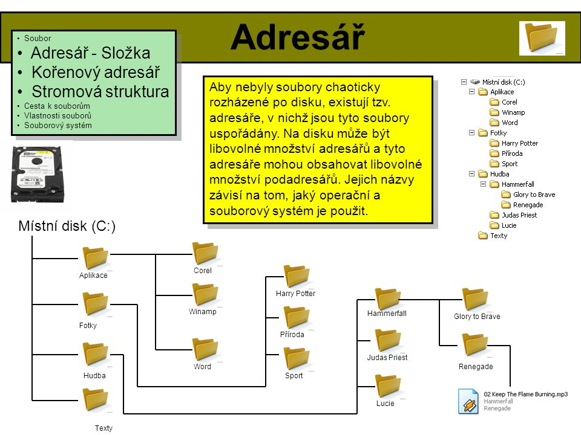

Soubory a adresáře
Vysvětlení
Adresář
je v informatice organizační jednotka v souborovém systému na datovém médiu. Adresář sdružuje na disku dokumenty (soubory) a další složky (podadresáře) a slouží k tomu, aby si je uživatel mohl logicky uspořádat dle vlastní volby.

(Vysvětlení v podobě obrázku)
© 2024, autor:
Petr Vítek
, třída:
IT1
®